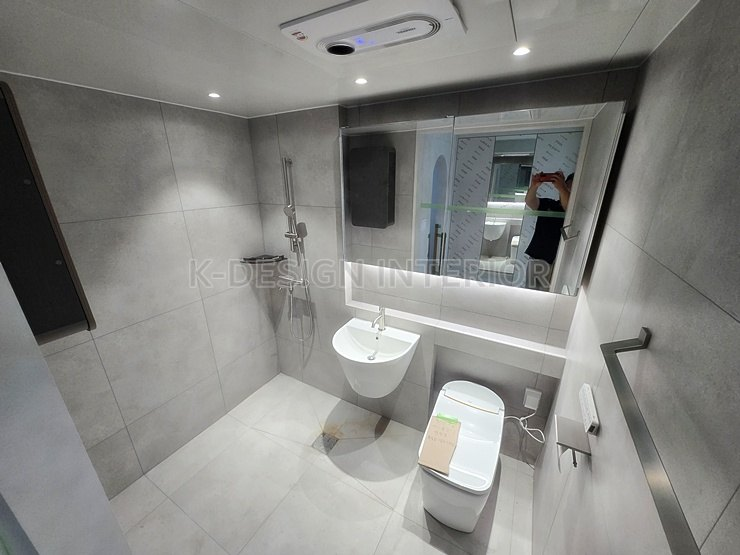

충남 당진 송악읍
송악읍
구축 아파트 리모델링
송악읍 주거공간 인테리어는 전체 리모델링부터 욕실, 주방 부분 시공까지 가능합니다. 현장 실측 후 디자인과 항목별 견적을 먼저 안내해 드립니다. 송악읍(서해대교와 당진IC·송악IC가 가까운 곳) 현장도 같은 방식으로 진행합니다.

케이디자인이 시공한 주거공간 현장
사진을 누르면 크게 볼 수 있습니다.
욕실 리모델링
벽걸이 세면대, 조명 거울거실 아트월
대리석 패턴, 실링팬아파트 거실
베이지 톤, 우물천장 간접조명거실과 주방
원목 마루, 오픈 공간송악읍 주거공간 인테리어 체크포인트
실측 전에 알아 두시면 상담이 빨라집니다.
관리사무소 신고와 이웃 안내
송악읍 아파트 인테리어는 착공 전 관리사무소 공사 신고와 이웃 안내가 필요한 경우가 많습니다. 공사 일정에 맞춰 함께 준비합니다.
조명으로 넓어 보이는 거실
우물천장 간접조명, 매립등, 라인 조명을 함께 쓰면 거실이 넓고 아늑해 보입니다. 아래 시공 사례의 거실들이 그렇게 만들어졌습니다.
주방 동선과 아일랜드
싱크대, 가스레인지, 냉장고 위치와 아일랜드 유무에 따라 주방 동선이 달라집니다. 가족 구성과 요리 습관을 듣고 배치를 제안합니다.
공정 순서 미리 알기
공정 순서가 꼬이면 이미 끝낸 마감을 다시 뜯게 됩니다. 처음부터 순서를 정해 공정표로 드립니다.
송악읍에서 맡길 수 있는 공사
송악읍 현장 상황을 보고 꼭 필요한 공사부터 제안합니다.
- 아파트 리모델링
- 욕실
- 부분 시공
- 주방
- 도배, 바닥
- 빌라, 단독주택
- 가까운 시공 지역천안, 아산, 당진, 평택을 중심으로 시공해 송악읍 현장도 일정 조율이 수월합니다.
- 한 팀이 끝까지디자인 따로, 시공 따로 맡기지 않아도 됩니다.
- 대표 직접 상담전화를 받은 사람이 현장에 나가고, 공사 마무리까지 확인합니다.
송악읍 현장 상담 안내
송악읍 집 인테리어를 상담하면 케이디자인 대표 김명구가 직접 방문해 구조와 배관 상태를 확인합니다. 그 결과를 바탕으로 디자인과 견적을 함께 드립니다.
당진은 시청 주변 시내 지역과 송악읍·합덕읍 같은 읍 지역으로 나뉘며, 아파트와 단독주택, 상가가 고루 있는 도시입니다.
당진 송악읍의 단독주택이나 오래된 주택은 단열과 창호, 배관 상태를 먼저 살펴봐야 합니다. 실측 때 이 부분을 확인하고 실내 리모델링 범위를 정합니다.
상담부터 완공까지
공정이 바뀔 때마다 진행 상황을 공유합니다.
전화 상담
평수와 공사 범위, 희망 일정을 알려주세요.
현장 실측
송악읍 현장에 직접 방문해 구조와 상태를 확인합니다.
디자인과 견적
디자인과 항목별 견적을 함께 드립니다.
시공
공정이 바뀔 때마다 사진으로 알려드립니다.
완공과 점검
마감 상태를 같이 둘러보고 인도합니다.
자주 묻는 질문
송악읍 아파트 인테리어도 시공하나요?
네. 당진 송악읍 아파트, 빌라, 단독주택 인테리어와 리모델링을 시공합니다.
송악읍 인테리어 견적은 어떻게 받나요?
전화(010-6852-0300)로 평수, 공사 범위, 희망 일정을 알려주시면 송악읍 현장을 방문해 실측한 뒤 디자인과 항목별 견적을 안내합니다.
욕실이나 주방만 부분 시공할 수 있나요?
가능합니다. 전체 공사가 부담되면 욕실이나 주방부터 하고, 나머지는 나중에 진행하셔도 됩니다.
우물천장 간접조명 시공도 하나요?
네. 송악읍 거실 우물천장 간접조명, 아트월, 매립등 공사를 함께 합니다. 아래 시공 사례에서 확인해 보세요.
- 상호
- 케이디자인
- 대표
- 김명구
- 시공 분야
- 주거공간, 상업공간 인테리어
- 시공 지역
- 충남 천안, 아산, 당진 / 경기 평택